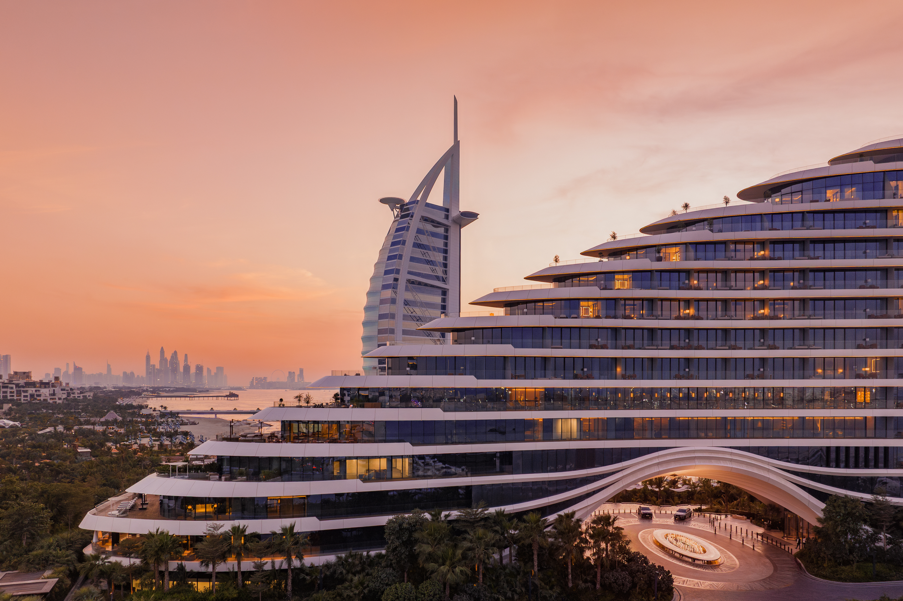
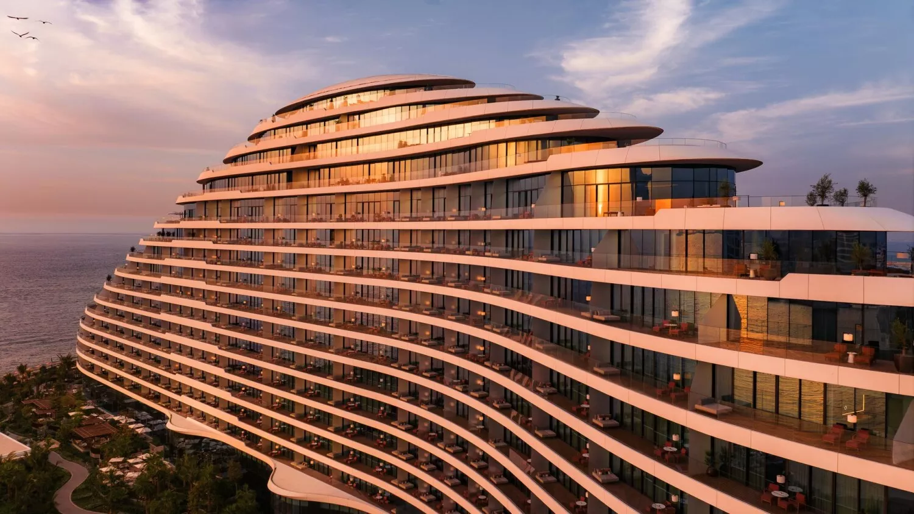
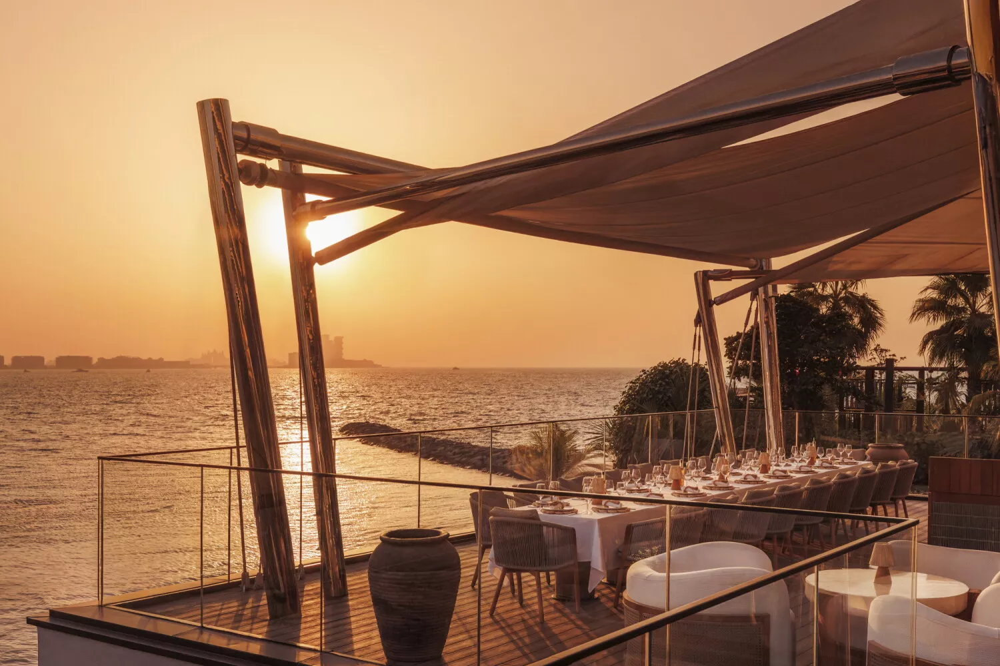
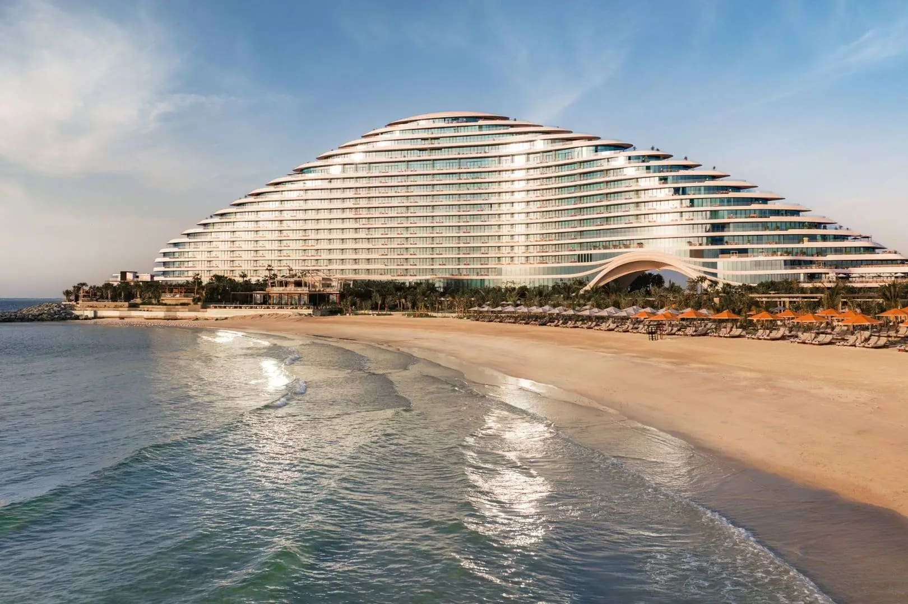

Favorite Hotels
Jumeirah Marsa Al Arab is probably my personal favorite in Dubai right now for clients who want polished resort luxury without losing warmth, beauty, or ease.
This one hits a really nice middle ground. It feels new, beautiful, and properly high-end, but it still feels usable. Families can be comfortable here. Couples can absolutely love it. And the overall mood is more refined and polished than a lot of Dubai resorts that lean too hard in one direction.
What makes it unique
It is the rare Dubai resort that feels equally right for affluent families and polished adult travelers.
This is what makes it stand out for me. Marsa Al Arab feels new and beautiful, but it does not force the stay into one narrow lane. Couples can have a very elegant Dubai trip here, and affluent families can feel fully comfortable too, which makes it one of the most broadly useful luxury recommendations in the city.
Stay
303 rooms and 84 suites
A broad room-and-suite lineup with marina, Gulf, and ocean-facing perspectives.
Dining
A deep day-to-night lineup
Multiple dining personalities, from Mediterranean and Japanese to clubby evenings and beachfront ease.
Best For
Balanced Dubai resort luxury
Families, couples, and affluent repeaters who want a polished resort with broad appeal.
Known For
Newness, marina views, strong suites
This is a resort with room to spread out, dine well, and really enjoy the property.



The overall setup
Officially, Jumeirah Marsa Al Arab opens with 303 rooms and 84 suites, which gives the hotel meaningful room to work with. It sits in one of the strongest positions in the city, between the Burj Al Arab and Jumeirah Beach Hotel, with marina and Gulf views that make the resort feel genuinely connected to the water.
The reason I personally like it so much is that it feels broad without feeling anonymous. It reads as a proper Dubai luxury resort, but it still feels comfortable, current, and beautiful in a way that does not force the guest into one mood.
Room types, suites, and family flexibility
There is real range here. The room and suite lineup moves from marina and ocean-facing rooms into terrace rooms, family rooms, deluxe suites, terrace suites, grand terrace suites, and then up to statement-level suites like the Presidential, Pearl, Royal, and larger family categories. That is what makes the property so useful. It can fit a couple doing Dubai beautifully, and it can also fit a multigenerational family that wants space, views, and less friction.
A few of the top categories are especially strong. Official details list the Five Bedroom Royal Suite at 1,048 square meters with a 416-square-meter terrace, which immediately tells you the resort knows how to play in the serious suite conversation when needed. Even the two-bedroom family suite categories are large enough to make longer family stays feel easy instead of cramped.

Restaurants and how the property actually lives
The dining depth is another reason I like it. Official and pre-opening material points to a broad collection including The Fore, Iliana, Kira, Mirabelle, Madame Li, Umi Kei, Bombay Club, Orizonta, Rialto, The Cullinan, and Kinugawa. That gives the resort enough variety that meals can feel like part of the trip instead of logistical filler.
This is the kind of hotel where a client can genuinely spend a slow day on property, move between the pool, spa, lunch, dinner, and drinks, and still feel like the hotel itself has enough personality to hold the stay together.
Why it works so well for both families and couples
This is where it stands out for me. Some Dubai hotels skew too hard toward adults, and some skew too hard toward families. Jumeirah Marsa Al Arab feels more balanced. Families get room choice, location, and a full resort setup. Couples still get the beauty, the newer feel, the restaurants, and a more polished, grown-up atmosphere than a loud family-heavy resort.
That is a big reason I would personally pull this hotel often. It solves for more people at once without feeling watered down.
Who I would book it for
- Affluent families who want a family-office style stay with room to spread out
- Couples who want beachfront Dubai with a newer, polished feel
- Repeat Dubai clients who want something fresher than the older classics
- Travelers who care about a resort's design, dining, and overall day-to-night flow
My honest take
This is the Dubai resort I would personally be excited to book for a very wide range of clients. It feels current, beautiful, easier to love than some of the louder options, and flexible enough to work for both serious family travel and very polished couple trips.